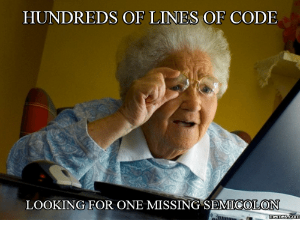
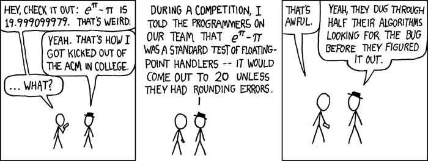

8 Data Structures
Review
- Control flow
- Choices -
if,else - Loops -
:,for,next,break,while - Exception handling -
stop,warning,message
- Choices -
- Functions
- Default values,
... - Scoping
- Lazy evaluation
- Default values,
- Environments
environment,.GlobalEnv,globalenv()new.env,assign,ls,rmwith
Data structures
If you have experiences in programming languages such as C, C++, or Java, you are probably wondering why we have not said anything about primitive types such as int, float, and boolean yet? And how are we going to introduce data structures, such as vectors, without defining scalar types first?
- First of all, as you might have noticed, R is dynamically-typed (see Typing systems), which is why we are able to use R as a calculator without specifying the types of the values we give to R in our code.
- More importantly, and dramatically, as we will show in this session, all primitive types in R are vectors.
See Scalar and vectors if you are not sure of these terms.
Outline
- Vectors
- Attributes
- Lists
- Functional programming
Recommended readings:
9 Summary
- atomic vectors are the primitive types in R
- data of different types may be coerced into another type
- attributes add context to atomic vectors
- matrices are atomic vectors with
dimattribute - class is attribute of atomic vectors
- all values in vectors are of the same type
- lists are collections of vectors of varying type and length

10 Fundamentals revisited
In the previous two sessions (Fundamentals I & II), we were
- Using numbers as if they were scalars
- Looping over values as if they were separate entities
Having learnt new things about R from this session, knowing that data structures of R are built on vectors, what do you think is the implication of this design?
10.1 Vector arithmetic
Now you know that 1 is actually a vector of length 1 the first and only element of which is the value 1, what does the expression 1 + 2 mean? Yes, you added two vectors (both of length 1) together. Therefore, all the operators in R operate assume input as vectors and gives vectors as outputs:
And our Bmi function works with vectors too.
Meaning that when you have a list of inputs, you don’t need a for loop calling Bmi iteratively to get a list of outputs.
Note the difference between the longer and shorter forms of & and |
10.2 Vectorize
- Some functions do not account for vector input.
Vectorizecreates a function wrapper that vectorizes the action of its argument function.
10.3 Functional programming
Functions are first class objects in R:
- Functions are printed just like a variable is
- Functions can be passed on to another function like a variable:
10.3.1 The apply family
apply- Like its name suggests,applyapplies a given function over a data structure, more specifically according to?apply: it applies functions over array margins.

lapplyloops the top level dimension and returns a listsapplysimplifies the returned list fromlapplyif all elements in that list is of the same length
mapplyis a multivariate version ofsapply.mapplyapplies the function to the first elements of each argument, the second elements, the third elements, and so on. Arguments are recycled if necessary.
Outer product of two vectors \(v_1\otimes v_2\) is very useful to vectorise functions that require two inputs:
10.4 Arithmetic precision
double and integer are referred to as numeric types in R.
Many experienced R users are able to write perfectly functioning R codes without knowing that there are two numeric types in R. R’s dynamic typing system (see Typing systems), and use of implicit conversion (see [Coercion]) make this possible. But knowing the difference between the two types and their implementation will help you diagnose your code when it is not working as intended. Take a look at the following example:
Recall when we introduced relational operators (==, !=,…), we emphasized that only use these operators for integer values. What if we convert the doubles to integers?
As stated in Why doesn’t R think these numbers are equal?, R FAQ :
The only numbers that can be represented exactly in R’s numeric type are integers and fractions whose denominator is a power of 2.
?all.equal- The functionall.equal()compares two objects using a numeric tolerance of.Machine$double.eps ^ 0.5. If you want much greater accuracy than this you will need to consider error propagation carefully.
The short answer to this question is precision. More precisely, the precision of the representation of fractions is limited in a computer.
You can also use this website Decimal to binary converter IEEE 754 to see the binary representation of double typed values.
For the long answer, see 0.300…004.
Exercises
E3.1 Bmi2
Add a return value advice_text to the Bmi2 function we drafted in the lecture. The value of advice_text should be chosen from one of the four character strings below according to bim_value:
- “below 18.5 – you’re in the underweight range”
- “between 18.5 and 24.9 – you’re in the healthy weight range”
- “between 25 and 29.9 – you’re in the overweight range”
- “between 30 and 39.9 – you’re in the obese range”
E3.2 ||, |, &&, &
Execute the following code snippet and answer the two questions in the comment:
E3.3 table
Given t <- table(c("apple", "banana", "coconut", "apple", "apple", "banana")) 1. What is the base type of t? 2. What attributes are associated with t? 3. What do you know about each of t’s attributes? 4. Which attribute(s) does t share with a matrix?
E3.4 apply
The runif function generates a vector of uniformly distributed random numbers within a given interval. For example, runif(10, min = 2, max = 3) returns 10 random numbers between 2 and 3.
- With the help of this function, create a 1000 x 6 matrix of uniformly distributed values between
5and6. - Calculate the 6 column-wise averages of the 1000 x 6 matrix without using a for loop.
Further Topics
Evaluating the Design of the R Language, Objects and Functions For Data Analysis
11 Scalar and vectors
(More details on this topic will be provided in the “Mathematics for Modellers” module taking place in week 2.)
We illustrate the difference between scalars and vectors with this simple example in a 2-dimensional space:

In the x-y space (2-dimensional) illustrated above, when considered independently, x and y are two scalar values. When combined, (x, y) defines the direction of the vector v in respect to the origin (where the two axis intersect).
And of course, you can imagine in a 3-dimensional space (an x-y-z space), a vector is defined as v = (x, y, z). The list of values inside the parentheses gets longer as the number of dimensions of the space gets higher.
In some programming languages, vectors are referred to as arrays.
Did you know that mosquitos are referred to as vectors in infectious disease modelling?
12 Statement terminator
The code snippet below has three lines of code.
If we add ; at the end of each statement, we can write all three statements in one line of code:
In programming languages, a syntax like ; is referred to as a statement terminator (or delimiter). As the name suggests, it indicates the end of a statement. In languages such as C and Java, ; is the only statement terminator, thus the use of ; is mandatory. In R (and Python, Javascript, Matlab …), additional to semicolons, a new line may indicate the end of a statement, therefore ; can be omitted in most cases.
3.2 Control structures, R Language Definition: Both semicolons and new lines can be used to separate statements. A semicolon always indicates the end of a statement while a new line may indicate the end of a statement. If the current statement is not syntactically complete new lines are simply ignored by the evaluator. If the session is interactive the prompt changes from ‘>’ to ‘+’.
The difference between a new line and a semicolon is that it only “may” be the end of a statement. This is why we can split a long statement into multiple lines without getting an error:
This is good, but if you are used to program in a language in which a semicolon is mandatory, you need to be aware that a statement may end before you think it does:

13 null in computers
Computer programs have the tendency to frame everything in binary forms: the power is either on or off, a key on the keyboard is either pressed or not, a website is either online or offline. With a sequence of binary switches, all real numbers can be represented by their corresponding binary form. Surely, there is nothing left to cover, right?
Hold on, what about nothing ? What represents nothing?
Programming languages often refer to this nothing-ness using the word “null”. Unix systems have the dev/null device for dumping outputs, SQL uses NULL to indicate values missing from a database, a null pointer indicates that the target is not a valid object in languages such as C++.

In the case of null pointer, its definition requires the guarantee that a null pointer does not compare equal to any pointer that point to a valid object. This is an example of the next layer of issue caused by this nothing-ness:
Mixing null value with other values often produces ambiguous results. This state is indeterminate, neither TRUE or FALSE. See Three-valued logic
In summary, to understand the use of NA and NULL, it is important to note the distinction between the two null-related issues computer programs have to deal with:
- Missing or undefined values
- Indeterminate logic state
14 Typing systems
SO: What is the difference between statically typed and dynamically typed languages?
Note that in dynamically typed languages, values have types, not variables.
15 SEXP
R is primarily written in C, Fortran, and R itself. (R source code) The R software environment is a GNU package, and is freely available under the GNU General Public License. It is necessary to know something about how R objects are handled in C code. All the R objects you will deal with will be handled with the type SEXP, which is a pointer to a structure with typedef SEXREC.
Symbolic-expression (SEXP) record (REC) structure, is a C structure underlying every R object, accessible via a pointer of type SEXP.
SEXPis common in LISP-like language syntaxes it is a way to represent a nested list of data. For example, the simple mathematical expression “five times the sum of seven and three” can be written as a s-expression with prefix notation. In Lisp, the s-expression might look like(* 5 (+ 7 3)).
SEXPREC is a variant type that can handle all the usual types of R objects, that is vectors of various modes, function, environments, language objects, etc.
The four atomic vector types correspond to four SEXP types:
INTSXP: integer vectorsREALSXP: double vectorsCPLXSXP: complex vectorsSTRSXP: character vectors
NULL is defined with SEXPTYPE #0 NILSXP
To learn more on this topic:
16 0.300…004
So you want to know more about this:
What is a floating point number and how is it different from an integer?
- Floating point numbers
- Decimal to IEEE 754 Floating Point Representation
- IEEE 754 Standard for Floating Point Binary Arithmetic
- Decimal to binary converter IEEE 754
Precision issue with floating point numbers:
- Is floating point math broken?
- Floating point math
- What Every Computer Scientist Should Know About Floating-Point Arithmetic
- R in a 64 bit world
The only numbers that can be represented exactly in R’s numeric type are integers and fractions whose denominator is a power of 2. :
- Why doesn’t R think these numbers are equal?, R FAQ
- Appendix G “Computational Precision and Floating Point Arithmetic”, pages 753–771 of Statistical Analysis and Data Display: An Intermediate Course with Examples in R, Richard M. Heiberger and Burt Holland (Springer 2015, second edition)
Relax … everything is working as intended :)
